能救命的句型。万一真不认识那个图标，就只说形状和颜色，意思交给老师补：
"I'm not sure what's inside, but it's a warning sign, so it means there's some danger ahead."
—— 这比硬编一个错答案好一百倍。
03课本给的标准答案长什么样
课本例题是 No horn（禁止鸣笛）。原文写得很书面，你不需要背成那样，但里面有四五个短语值得直接搬走。
Example
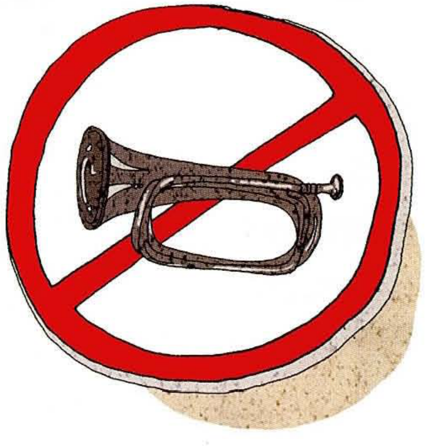
No horn /noʊ hɔːrn/
What you seeA red circle with a diagonal line through it, and inside it there's a horn — the thing a car uses to make a loud noise.
What it means禁止鸣笛。You're not allowed to honk here.
Say it like thisIt's a red circle with a slash through it, and inside there's a car horn. It means no honking — you can't blow your horn in this area, usually because it's a quiet place like a residential area or a school zone.
从课本答案里能直接拿走的地道表达
表达
意思 / 用法
blow your horn
按喇叭（动词用 blow 或 honk，不是 press the horn）
a quiet area
需要安静的区域，比 a silent place 自然得多
a residential area
居民区。老师大概率会问你这个词，练一下重音 /ˌrezɪˈdenʃl/
impatient drivers
没耐心的司机。堵车时爱按喇叭的那群人
drive defensively
防御性驾驶：预判别人可能犯的错。比 drive carefully 高级
This sign warns people not to…
这个标志警告人们不要……本课万能开头句
04十个标志：图里画的是什么，怎么讲出来
每张卡按三段式拆开：What you see 是照着图说话，What it means 是一句话结论，Say it like this 是可以直接背下来念出口的整段。建议把最后一段出声念三遍——眼睛会不代表嘴会说。
01
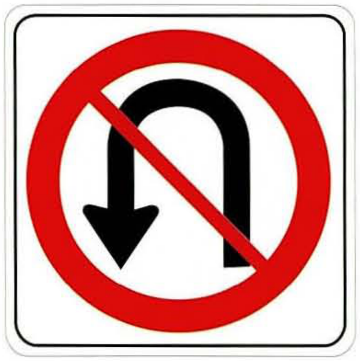
No U-turn /noʊ ˈjuː tɜːrn/
What you seeA red circle with a slash. Inside, an arrow goes up, hooks around, and points back down — it bends back on itself.
What it means禁止掉头。You can't turn your car around here.
Say it like thisIt's a red circle with a line through it, and the arrow inside curls back on itself. That's a "no U-turn" sign — it means you're not allowed to turn around and go back the other way.
02
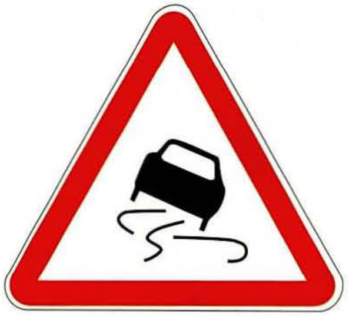
Slippery road /ˈslɪpəri roʊd/
What you seeA red triangle, which always means warning. Inside there's a car with wavy lines behind its tires — the marks a car leaves when it skids.
What it means路面湿滑。Slow down, the road is slippery.
Say it like thisIt's a red warning triangle with a car on it, and there are wavy lines coming off the tires. Those lines mean the car is skidding, so the road is slippery. You see this one in the rain, or on mountain roads.
03
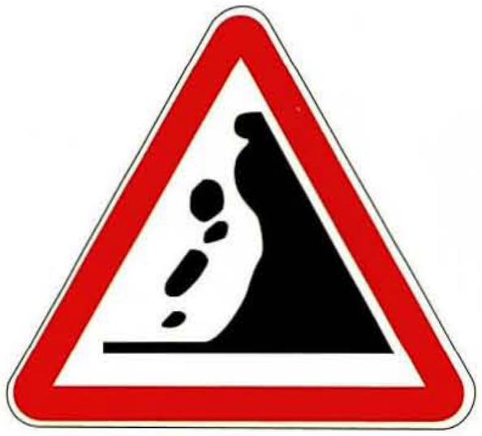
Falling rocks /ˈfɔːlɪŋ rɑːks/
What you seeAnother red triangle. On the left there's a steep slope, and black shapes are rolling down it.
What it means注意落石。Rocks may fall onto the road up ahead.
Say it like thisA red warning triangle, with rocks tumbling down a hill on the left side. It means there might be falling rocks ahead, so don't stop right under the cliff and keep your eyes on the road.
04
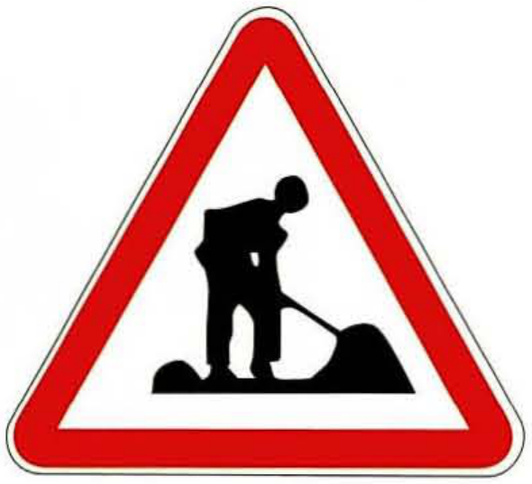
Road work /ˈroʊd wɜːrk/
What you seeA red triangle with a person on it — someone bent over a shovel, working on a pile of dirt or gravel.
What it means前方施工。Workers are fixing the road; expect delays.
Say it like thisIt's a warning triangle with a construction worker digging on it. It means there's road work ahead, so the traffic might be slow, or one lane might be closed.
05
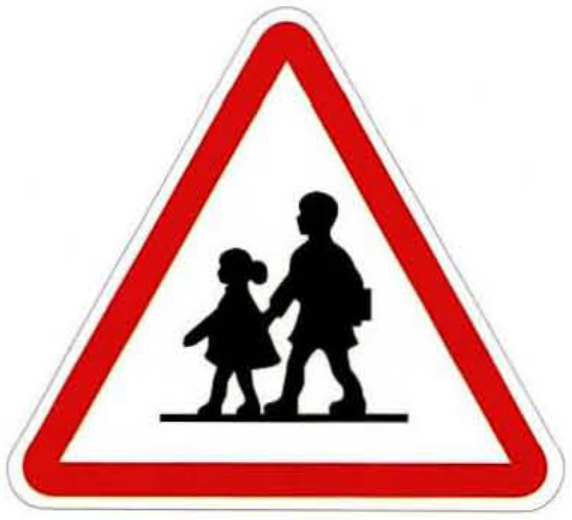
School zone /ˈskuːl zoʊn/
What you seeA red triangle with two figures on it — a taller one holding hands with a shorter one. So, an adult and a child.
What it means注意儿童 / 学校区域。Kids may be crossing, so drive slowly.
Say it like thisIt's a red warning triangle showing an adult and a child walking hand in hand. It marks a school zone, so children might run out into the road — you have to slow down here.
06
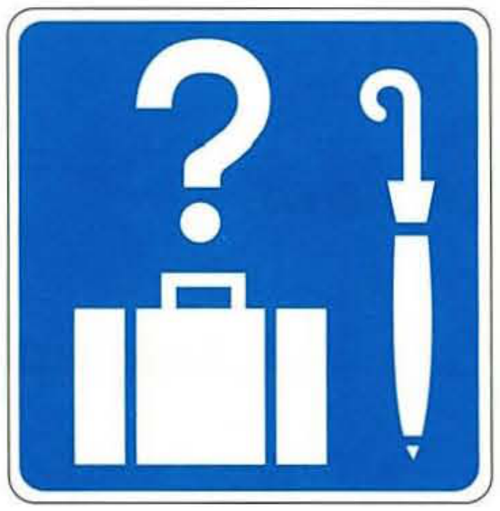
Lost and found /ˌlɔːst ən ˈfaʊnd/
What you seeThis one is blue and square — an information sign, not a warning. Inside there's a big question mark, a suitcase, and a closed umbrella.
What it means失物招领。If you've lost something, this is where you go to get it back.
Say it like thisIt's a blue square, and blue squares are information signs, so this isn't telling you off — it's telling you something is here. The question mark, the suitcase and the umbrella together mean lost and found: this is the office where you claim things you've lost.
07
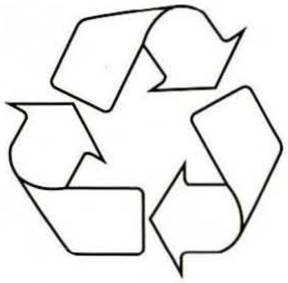
Recycling /ˌriːˈsaɪklɪŋ/
What you seeThree arrows chasing each other around in a triangle. No colour, no border — just the arrows.
What it means可回收。The material can be recycled, or this bin is for recycling.
Say it like thisIt's three arrows going round in a triangle — that's the recycling symbol. It means this thing is recyclable, or that this bin is only for things you can recycle, like bottles and paper.
08
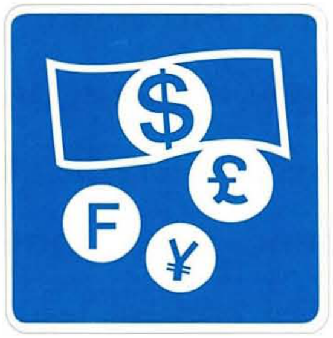
Currency exchange /ˈkɜːrənsi ɪksˈtʃeɪndʒ/
What you seeAnother blue square. Inside there's a banknote, and coins marked with different money symbols — dollar, pound, yen.
What it means外币兑换。You can change your money here.
Say it like thisA blue information sign with a bill and some coins on it, each one in a different currency. It means there's a currency exchange here — you can swap your money for the local currency, usually at an airport or a big train station.
09
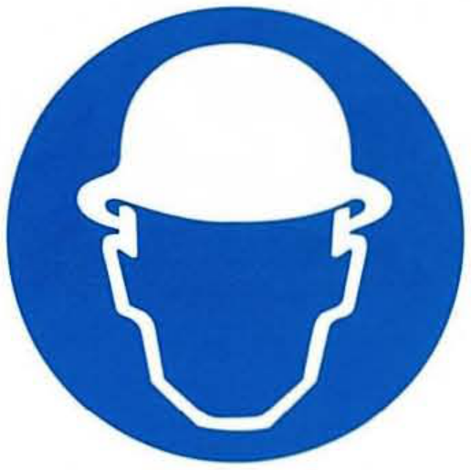
Hard hat required /ˈhɑːrd hæt rɪˈkwaɪərd/
What you seeA blue circle, white symbol inside: the outline of a head wearing a safety helmet. Blue circles are the ones that tell you what you must do.
What it means必须戴安全帽。No helmet, no entry.
Say it like thisIt's a blue circle with a hard hat inside. Blue circles are mandatory, so this isn't a suggestion — it means you have to wear a helmet in this area. You see it on building sites and in factories.
10
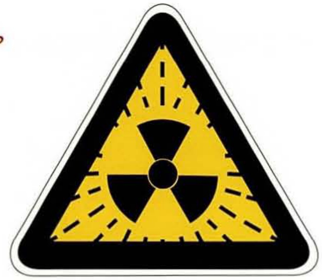
Radiation hazard /ˌreɪdiˈeɪʃn ˈhæzərd/
What you seeA yellow triangle with a thick black border, and inside it a black symbol with three blades meeting in the middle, like a fan.
What it means辐射危险。Radioactive material — stay out.
Say it like thisYellow with a black border is the most serious kind of warning. The three-blade symbol in the middle is the radiation symbol, so it means radioactive material is here. Unlike the other signs, this one isn't about traffic at all — you just stay away.
Let's start with this one. It's a red triangle, so it's a warning sign. Inside there's a car with wavy lines behind it — that means the car is skidding. So the road is slippery ahead, and you should slow down.
把第 02 节的形状规律用上，开头两秒就把定性说了，听起来会非常从容。
Which of these signs have you seen in China?
Most of them, actually — we use the same red triangles and blue circles. The school zone sign and the road work sign are everywhere in my city. But the "no horn" one, I see it a lot near hospitals and schools.
结构是「大部分都见过 → 举两个 → 补一个细节」。不要只答 I have seen all of them 就停住。
Is there any sign that's different in China?
Hmm, I think the lost and found sign is more common in airports here than on the street. And we have a lot of signs telling people not to spit or not to smoke in public — those are everywhere, and honestly people ignore them.
被问「差异」，先答一个具体例子，再加一句个人看法。加看法这一步是口语课最加分的地方。
Do you think drivers in your city honk too much?
Way too much, yes. People honk the second the light turns green — even before it turns green, honestly. I think it's a habit more than a real warning. Nobody's actually trying to tell you something.
注意 way too much（口语加强）、the second…（一……就……）、more than…（与其说是……不如说是……）。三个都是四六级作文里用不出来、但口语里极其常用的结构。
Why do you think the no-horn sign is put in residential areas?
Because people live there, and noise carries. If you honk outside someone's window at six in the morning, it wakes up the whole building. So the sign isn't really for drivers — it's for the people who live there.
最后一句 it's not really for A — it's for B 是很高级的转折，说出来老师会明显眼睛一亮。
Have you ever got lost somewhere because you couldn't understand the signs?
Not lost exactly, but confused. I was in Japan once and the signs were mostly in Japanese, so I was just guessing from the pictures. Half the time I got it right — which is kind of the point of a good sign, I guess.
If you could put one sign on your campus, what would it be?
A "no phone at the dinner table" sign, maybe? In the canteen everyone's staring at their phone, nobody talks. Or actually — a "keep quiet in the library" sign that people actually listen to.
✗Please don't press the horn. ✓Please don't honk. / No honking.
英文里「按喇叭」不说 press —— 用 honk，或者 blow your horn。「禁止鸣笛」的标牌上就是 No horn。
✗It's a sign of attention falling stone. ✓It's a falling rocks sign — it warns you about rocks falling onto the road.
中文标志上的「注意……」不是英文的 attention。英文标牌直接说事情本身：Falling rocks、Road work、Children crossing。
✗This sign means you can't turn around the head. ✓This sign means you can't make a U-turn.
掉头 = a U-turn（字母 U 的形状就是那个箭头）。make a U-turn 是标准搭配。
✗The road is slip. ✓The road is slippery.
slip 是动词（滑倒），形容「滑的」要用形容词 slippery。同理 It's dangerous 不是 It's danger。